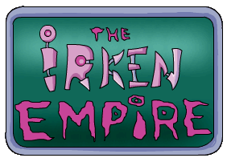

The Irkens of Invader ZIM are a very well-developed race. There is so much background detail that I thought they deserved their own section. So here it is, a guide to the Irkens!
-Irken Biology- -Irken Society- -Irken Classes/Jobs- -Irken Military Vehicles- -Invaders-